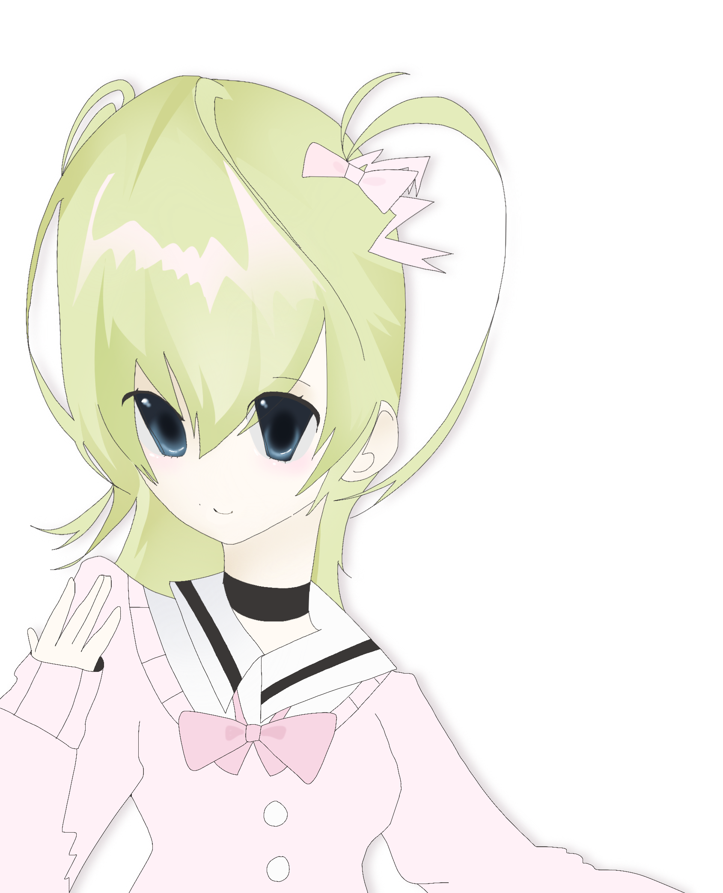
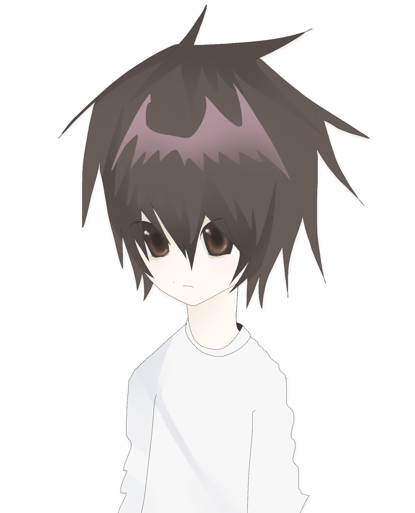

MISA AMANE
Misa Amane is a popular and cheerful character. She's famous for being a model and an actor.
In the story of Deathnote, Misa plays an important role as the 2nd Kira. However, her love for Light Yagami leads to her demise as she couldn't live with herself after his death.
 ORIHIME INOUE
ORIHIME INOUE
Orihime Inoue is the deuteragonist of the story of Bleach.
She is one of Ichigo’s best friends (soon wife) who helps to fight off evil that tries to take over the world of the living and the dead.
She has a kind hearted and understanding soul.
 RUKIA KUCHIKI
RUKIA KUCHIKI
Rukia Kuchiki is a shinigami, who will soon be the captain of the 13th Division. She is one of Ichigo’s best friends who is determined to protect and stand up to her friends and family to pay back and inspired by Ichigo’s selfless determination to save her from execution no matter the consequences.
 ICHIGO KUROSAKI
ICHIGO KUROSAKI
Ichigo

L LAWLIET
L Lawliet, famously known as L, is a famous detective who never shows his face in public. He posesses extremely high levels of intelligence and skill, and is considered the smartest character in Deathnote.
It's only when he meets Light when he meets someone who's almost at his level, but Light ultimately defeats him at the end, killing him using the Deathnote.
 LIGHT YAGAMI
LIGHT YAGAMI
Light Yagami, otherwise known as Kira, is an intelligent, charismatic, and a popular student who is the son of the chief of the Japanese National Police Agency. Overall, he possesses a very complex personality, and he easily manipulates everyone around him.
Although he initially claims his goal is justice, his methods quickly become ruthless and self-serving. Light is a master manipulator, using his intelligence and charm to control those around him, including the police task force investigating Kira.
However, Light eventually dies, ending up in neither heaven nor hell.